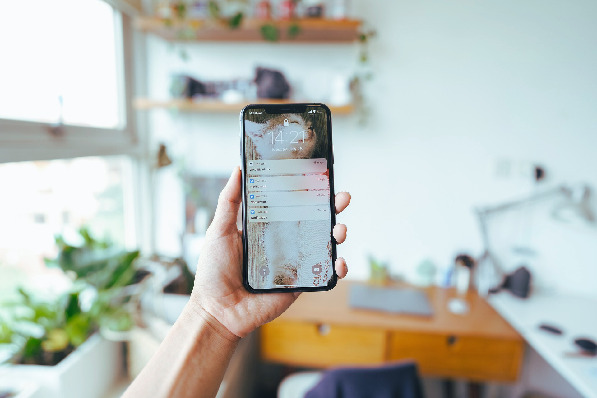
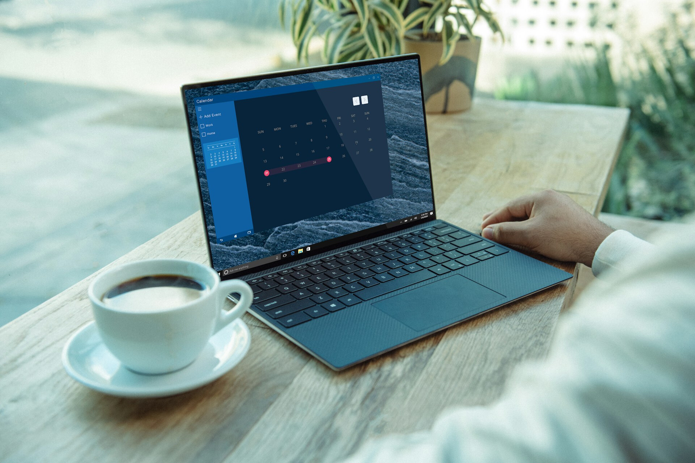
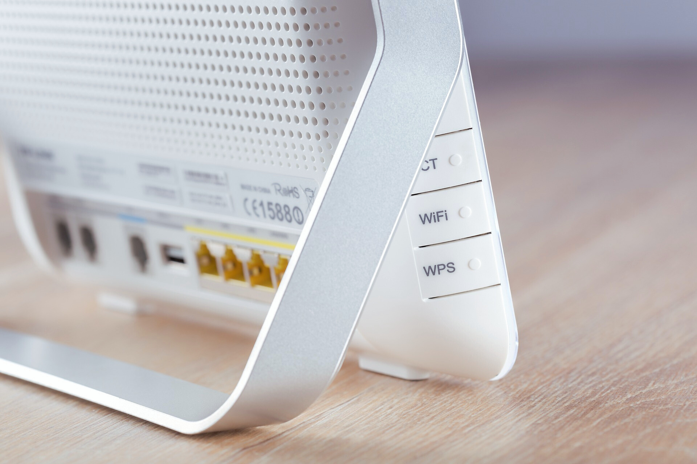

Ystävällistä ja asiantuntevaa apua silloin, kun sitä tarvitset
Hinnat ovat suuntaa-antavia ja perustuvat 30 € tuntimaksuun, joka on minimiveloitus ja veloitetaan jokaisesta käynnistä. Tuntihinnnan lisäksi peritään myös kotikäyntimaksu 10 €, joten minimiveloitus on yhteensä 40 €.
(Kaikki hinnat sisältävät alv 25,5%)
Hinta: n. 40 € (sisältää max. 1,5 tuntia työtä)
Hinta: n. 30 € (sisältää max. 1 tuntia työtä)
Hinta: n. 40-50 € (sisältää max. 2 tuntia työtä)
Hinta: n. 30-40 € (sisältää max. 1,5 tuntia työtä).
Hinta: n. 30 € (sisältää max. 1 tunti työtä)
Hinta: n. 30 € (max. 1 tunti lisätunnit tapauskohtaisesti)
Työssäni olen huomannut, kuinka paljon asiakkaille myydään erilaisia palveluita ja laitteita, mutta niiden käyttöönotto ja käytön opettelu jäävät usein käyttäjän vastuulle. Valitettavasti tällä hetkellä palveluita, jotka tarjoavat apua käyttöönotossa, on hyvin rajallisesti saatavilla.
Tämän huomattuani, päätin perustaa Jyväskylän Digituki -palvelun, jonka tavoitteena on:
1. Tarjota selkeää ja käytännönläheistä tukea asiakkaille uusien laitteiden ja palveluiden käyttöönotossa paikanpäällä.
2. Vähentää turhautumista ja parantaa käyttökokemusta tarjoamalla asiantuntevaa neuvontaa ja opastusta.
3. Kehittää asiakkaideni digitaitoja, jotta he voivat hyödyntää laitteitaan ja digitaalisia palveluitaan täysin ja itsenäisesti.
Olen 24-vuotias, lähes valmistunut Jyväskylän yliopiston tietojärjestelmätieteiden opiskelija. Työkokemukseni ja koulutukseni myötä minulla on vahva pohja monenlaisten teknisten ongelmien ratkaisemiseen. Lisäksi pystyn tarjoamaan henkilökohtaisia neuvoja laitteidesi turvalliseen ja huolettomaan käyttöön, jotta voit nauttia laitteiden ja palveluiden käytöstä ilman suurempaa stressiä.
Asiakkaideni tyytyväisyys on aina etusijalla, ja siksi olen sitoutunut tarjoamaan parasta mahdollista tukea ja palvelua. Tiedän, kuinka turhauttavaa voi olla, kun laitteet eivät toimi odotetusti. Älä jää yksin teknologisten haasteidesi kanssa. Ota rohkeasti yhteyttä puhelimitse, sähköpostilla tai WhatsAppin kautta, niin selvitetään yhdessä, kuinka voin auttaa juuri sinua.